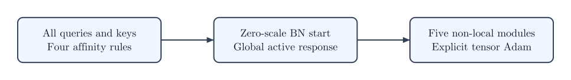
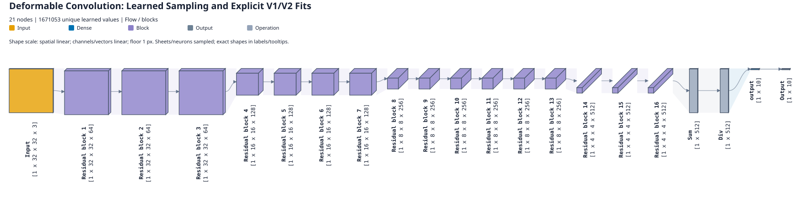
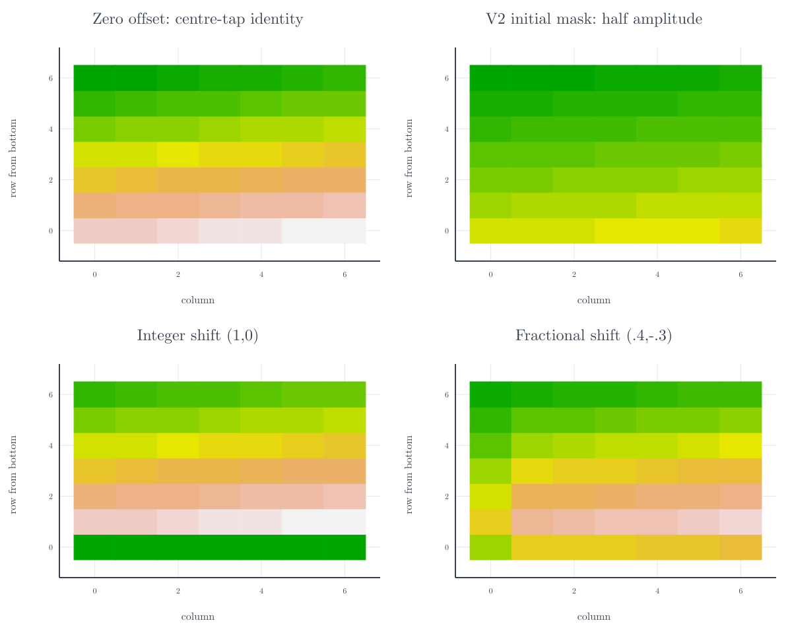
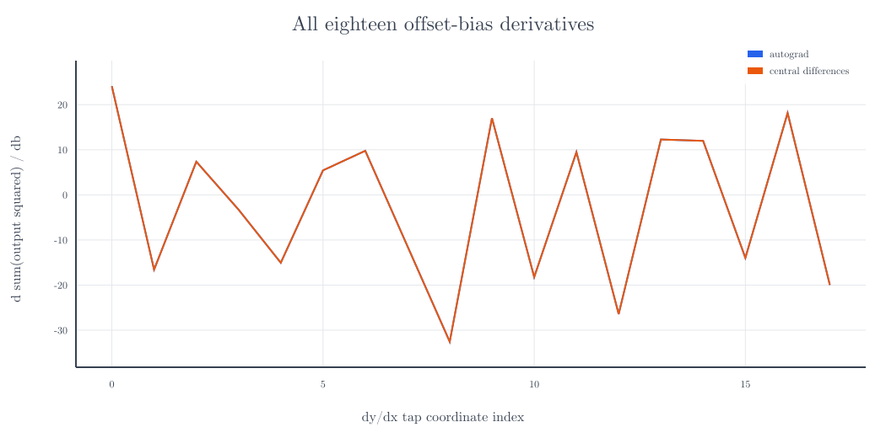
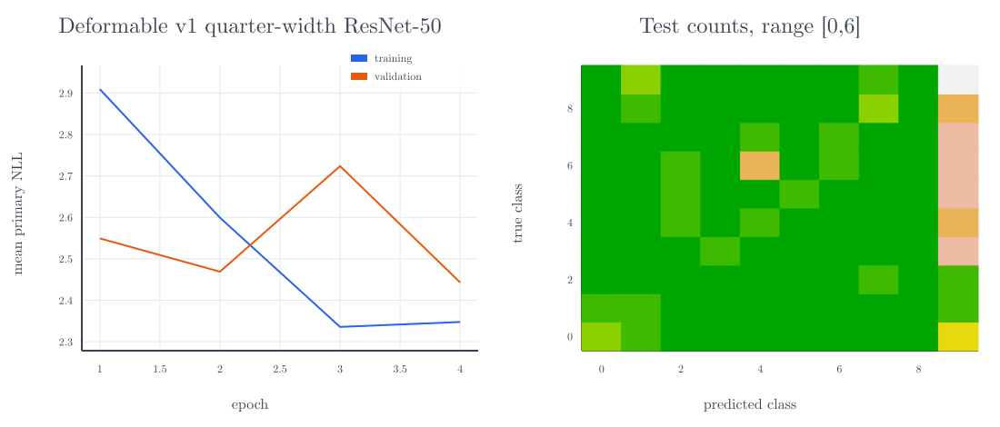
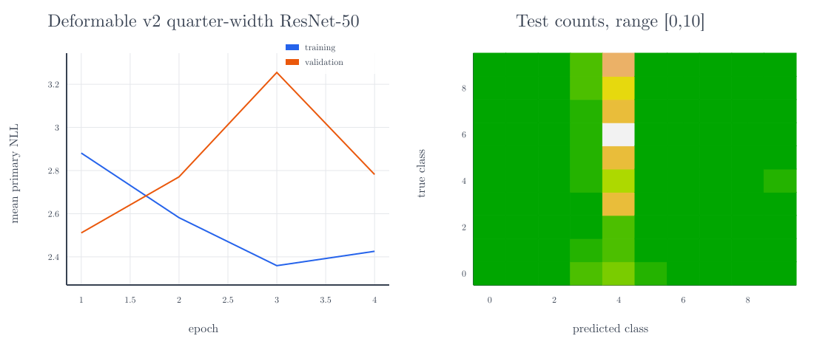
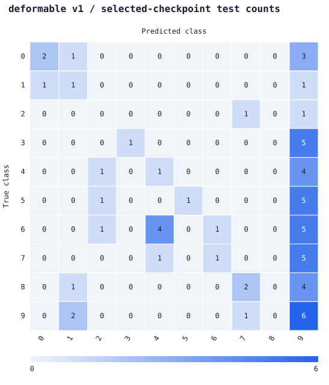
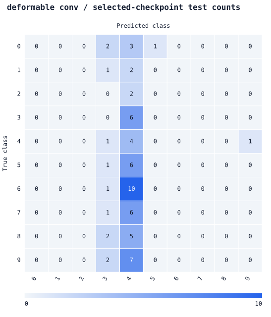

Deformable Convolution: Learned Sampling and Explicit V1/V2 Fits
Abstract
Deformable filters learn where each spatial tap samples, while v2 also learns a modulation mask. We visualize integer/fractional sampling, verify values and all offset-bias derivatives, then show separate tensor Adam loops for complete compact v1 and v2 residual networks.
Source example: examples/cpp/source/nn/1_convolutional_neural_networks/1.5_attention_and_modern_convnets/deformable_conv.cpp.
The method
For tap k=(ky,kx) and output position p, sampling uses p*stride-pad+dilation*k+(dy,dx). Offsets are interleaved dy,dx per row-major tap. Four neighboring input pixels contribute by bilinear weights; pixels outside the image contribute zero. The main filter contracts sampled tap/channel values into output channels. A zero-initialized biased 3×3 predictor produces 2K offsets, or 3K outputs for v2 (2K offsets then K logistic masks), with K=k². Main filters use He-uniform initialization. Prediction uses the main stride and symmetric padding one; main symmetric pad is dilation*(k−1)/2. A stride-one wrapper keeps image size.
A new v1 layer with zero offsets equals ordinary convolution with the same weights. V2 starts with masks sigmoid(0)=.5, so its BIAS-FREE output is half that convolution. An optional output bias is added afterward. This amplitude statement is about one layer, not a complete BN-normalized network. The centre-only diagnostic isolates sampling from spatial filtering; fractional coordinates check zero-extension rather than border clamping. An independent host oracle is only a numerical reference: production offset prediction, sampling, modulation, contraction, losses and fitting use the tensor library.
Bilinear derivatives are piecewise; integer-coordinate boundaries can be nondifferentiable. The Float64 finite-difference probe uses fractional parts between .2 and .8 so every perturbation stays on one piece. It checks all eighteen offset-bias coordinates, including sampling near image boundaries. Native fixtures also check stride one/two and dilation one/two at zero offsets.
The two classifier fits retain all sixteen bottlenecks of quarter-width ResNet-50. A 3×3/1 stem without pooling and first-1×1 stage strides match the compact source. All nine spatial filters in stages three/four become deformable, operating on 8×8 and 4×4 maps with widths 64/128. The plain 1484186-scalar model gains six*(9*64*maps+maps)+three*(9*128*maps+maps) predictor scalars, where maps=18 or 27, giving 1608764 for v1 and 1671053 for v2. Deformable filters are bias-free followed by BN/ReLU; BN epsilon is 1e-5. Other layers use ordinary symmetric-padded He-uniform convolutions, final global mean and a biased classifier. The full-model probe checks all learned gradients are finite at the original 32-pixel geometry.
Each visible fit uses 128 fit/64 validation/64 official-test rows, four batch-eight epochs (64 updates, kept short for build time), Adam(.001), explicit kernel L2=.0001/2 and independent padded crops/flips. Every offset predictor, mask predictor, main kernel and backbone leaf enters the optimizer. Validation selects paired learned/BN checkpoints separately for v1 and v2. These small fixed-seed fits do not reproduce the source's longer training, detection benchmarks or the paper's feature-mimicking objective.
The concept diagram below is drawn by dm::graphics::Diagram. Its editable C++
source is the complete block below; regeneration uses the same datamunge toolchain
as the numerical examples. Exports consume the saved local SVG.
#include <dm/dm.hpp>
int main() {
std::filesystem::create_directories("build");
dm::graphics::Diagram diagram;
diagram.node("n0", {0.0, 0}, "Predict dy and dx\nOptional logistic masks");
diagram.node("n1", {5.2, 0}, "Bilinear tap samples\nZeros outside image");
diagram.node("n2", {10.4, 0}, "Full compact v1/v2\nExplicit tensor Adam");
diagram.edge("n0", "n1").edge("n1", "n2");
diagram.save_svg("build/deformable_conv_concept.svg");
}
Executed tensor architecture
This figure executes the inference configuration shown in the code, using a zero-valued shape probe without fitting or loading a checkpoint. Named stage boundaries group whole subgraphs where available; other nodes retain functional-layer detail. Exact batch-inclusive shapes and reachable parameter totals come from the trace. Shared linear scales map spatial dimensions and channel counts to blocks; the one-pixel visibility floor is disclosed in the legend. Labels use compact monospace text, rotate counterclockwise and sit beside their own glyphs. Arrows flow left to right; wide diagrams scroll at native size on the website.
#include <dm/dm.hpp>
int main() {
namespace n = dm::nn;
namespace m = n::models;
n::set_num_threads(2);
std::filesystem::create_directories("build");
n::models::AttentionResNetConfig cfg;
cfg.classes = 10;
cfg.width_divisor = 4;
cfg.small_stem = true;
cfg.stride_on_3x3 = false;
cfg.deformable_from = 3;
cfg.modulated = true;
n::ParameterStore p(17), state(17);
n::Module architecture_model(
[&](const n::Tensor& image) {
const auto out = n::models::AttentionResNet(p, state, image, cfg, false);
auto previous = image;
for (std::size_t i = 0; i < out.blocks.size(); ++i) {
n::model_stage("Residual block " + std::to_string(i + 1), previous, out.blocks[i]);
previous = out.blocks[i];
}
return out.logits;
},
"Deformable Convolution: Learned Sampling and Explicit V1/V2 Fits");
n::ModelPlotOptions options;
options.style = n::ModelPlotStyle::Flow;
options.detail = n::ModelPlotDetail::Blocks;
options.labels = {.type = n::ModelPlotLabel::NameAndShape, .size = 12, .wrap = 24};
options.spacing = {.layer = 24, .lane = 12, .label = 8, .margin = 20};
options.sizing.spatial_size = 96;
options.sizing.channel_size = 42;
options.sizing.minimum_extent = 1;
options.opacity = .8;
const auto diagram = architecture_model.plot(n::zeros({1, 32, 32, 3}), options);
diagram.save_svg("build/deformable_conv_architecture.svg");
std::print(
"{} displayed nodes; {} reachable learned values.\n",
diagram.nodes().size(),
diagram.parameter_count());
}21 displayed nodes; 1671053 reachable learned values.

Isolating the sampling geometry
#include <dm/dm.hpp>
int main() {
namespace n = dm::nn;
const auto type = n::DType::Float64;
const auto x = n::arange(0, 49).to(type).reshape({1, 7, 7, 1});
auto layout = dm::graphics::RLayout::create(2, 2);
n::ParameterStore p(17, type);
{
n::NoGradGuard guard;
n::models::DeformableConv2D(p, "d", x, 1, 3, 1, false);
p.set("d/W",
n::one_hot(n::tensor({4}).to(n::DType::Int64), 9, 1, 0, type).reshape({3, 3, 1, 1}));
}
const auto plain = n::models::DeformableConv2D(p, "d", x, 1, 3, 1, false).output;
if (n::max(n::abs(plain - x)).item() != 0)
return 1;
layout.add(n::plot_tensor_map(plain.reshape({7, 7}), 0, 48)
.title("Zero offset: centre-tap identity"));
n::ParameterStore q(17, type);
{
n::NoGradGuard guard;
n::models::DeformableConv2D(q, "m", x, 1, 3, 1, true);
q.set("m/W", p.at("d/W"));
}
const auto half = n::models::DeformableConv2D(q, "m", x, 1, 3, 1, true).output;
if (n::max(n::abs(half - .5 * x)).item() != 0)
return 1;
layout.add(n::plot_tensor_map(half.reshape({7, 7}), 0, 48)
.title("V2 initial mask: half amplitude"));
for (auto [dy, dx] : std::vector<std::pair<double, double>>{{1, 0}, {.4, -.3}}) {
p.set("d/offset/b",
(n::ones({9, 2}, type) * n::from_vector(std::vector<double>{dy, dx})).reshape({18}));
const auto shifted = n::models::DeformableConv2D(p, "d", x, 1, 3, 1, false).output;
layout.add(
n::plot_tensor_map(shifted.reshape({7, 7}), 0, 48)
.title(dy==1?"Integer shift (1,0)":"Fractional shift (.4,-.3)"));
}
std::filesystem::create_directories("build");
layout.size(1200, 960).fit_panels().save_svg("build/deformable_conv_sampling.svg");
std::print("Centre-only kernel isolates sampling. V1 starts at identity; v2 starts at half "
"amplitude. Bias-predicted integer/fractional shifts use dy/dx order and "
"bilinear zero-extension.\n");
}Centre-only kernel isolates sampling. V1 starts at identity; v2 starts at half amplitude. Bias-predicted integer/fractional shifts use dy/dx order and bilinear zero-extension.

Independent oracle and fractional derivatives
#include <dm/dm.hpp>
int main() {
namespace n = dm::nn;
const auto type = n::DType::Float64;
n::ParameterStore p(17, type);
const auto x = n::sin(.37 * n::arange(0, 7 * 7 * 2).to(type)).reshape({1, 7, 7, 2});
{
n::NoGradGuard guard;
n::models::DeformableConv2D(p, "d", x, 3, 3, 1, false);
const auto pattern = .37 + .9 * n::sin(1.7 * n::arange(0, 18).to(type));
p.set("d/offset/b", n::floor(pattern) + .2 + .6 * (pattern - n::floor(pattern)));
}
const auto out = n::models::DeformableConv2D(p, "d", x, 3, 3, 1, false);
const auto values = x.to_vector<double>(), weights = p.at("d/W").to_vector<double>(),
offsets = p.at("d/offset/b").to_vector<double>();
// Independent host bilinear oracle; production sampling and offset prediction are tensors.
auto sample = [&](double y, double z, int c) {
const int y0 = int(std::floor(y)), x0 = int(std::floor(z));
double result = 0;
for (int dy = 0; dy < 2; ++dy)
for (int dx = 0; dx < 2; ++dx) {
const int yy = y0 + dy, xx = x0 + dx;
if (yy >= 0 && yy < 7 && xx >= 0 && xx < 7)
result += (dy ? y - y0 : 1 - y + y0) * (dx ? z - x0 : 1 - z + x0) *
values[(yy * 7 + xx) * 2 + c];
}
return result;
};
double value_error = 0;
for (int y = 0; y < 7; ++y)
for (int z = 0; z < 7; ++z)
for (int o = 0; o < 3; ++o) {
double ref = 0;
for (int k = 0; k < 9; ++k)
for (int c = 0; c < 2; ++c)
ref +=
sample(y - 1 + k / 3 + offsets[2 * k], z - 1 + k % 3 + offsets[2 * k + 1], c) *
weights[(k * 2 + c) * 3 + o];
value_error = std::max(value_error, std::abs(out.output.at({0, y, z, o}) - ref));
}
const auto derivative =
n::grad(n::sum(n::square(out.output)), {p.at("d/offset/b")})[0].to_vector<double>();
std::vector<double> numeric;
n::NoGradGuard guard;
const double h = 1e-5;
double error = 0;
for (int k = 0; k < 18; ++k) {
auto plus = offsets, minus = offsets;
plus[k] += h;
minus[k] -= h;
p.set("d/offset/b", n::from_vector(plus));
const double a =
n::sum(n::square(n::models::DeformableConv2D(p, "d", x, 3, 3, 1, false).output))
.item();
p.set("d/offset/b", n::from_vector(minus));
const double b =
n::sum(n::square(n::models::DeformableConv2D(p, "d", x, 3, 3, 1, false).output))
.item();
numeric.push_back((a - b) / (2 * h));
error = std::max(error, std::abs(derivative[k] - numeric.back()));
}
if (value_error > 1e-12 || error > 1e-7)
return 1;
auto plot = dm::graphics::RPlot::create();
plot.lines(n::arange(0, 18).to_vector<double>(), derivative, "autograd", {37, 99, 235})
.lines(n::arange(0, 18).to_vector<double>(), numeric, "central differences",
{234, 88, 12})
.title("All eighteen offset-bias derivatives")
.x_label("dy/dx tap coordinate index")
.y_label("d sum(output squared) / db");
std::filesystem::create_directories("build");
dm::graphics::RLayout::create(1, 1).add(plot).size(1050, 520).fit_panels().save_svg(
"build/deformable_conv_derivatives.svg");
std::print("Float64 fractional sampling: maximum independent-oracle value error {:.12f}; "
"all eighteen offset derivatives match central differences, maximum absolute "
"error {:.12f}. Coordinates stay away from integer boundaries.\n",
value_error, error);
}Float64 fractional sampling: maximum independent-oracle value error 0.000000000000; all eighteen offset derivatives match central differences, maximum absolute error 0.000000001280. Coordinates stay away from integer boundaries.

All blocks and deformable predictors
#include <dm/dm.hpp>
int main() {
namespace n = dm::nn;
n::set_num_threads(2);
for (bool modulated : {false, true}) {
n::ParameterStore p(17), state(17);
n::models::AttentionResNetConfig cfg;
cfg.classes = 10;
cfg.width_divisor = 4;
cfg.small_stem = true;
cfg.stride_on_3x3 = false;
cfg.deformable_from = 3;
cfg.modulated = modulated;
cfg.update_stats = false;
const auto x = n::sin(.37 * n::arange(0, 2 * 32 * 32 * 3).to(n::DType::Float32))
.reshape({2, 32, 32, 3});
const auto out = n::models::AttentionResNet(p, state, x, cfg, true);
const int64_t maps = modulated ? 27 : 18, expected = 1484186 + 6 * (9 * 64 * maps + maps) +
3 * (9 * 128 * maps + maps);
if (p.count() != expected || out.blocks.size() != 16 ||
out.features.shape() != n::Shape{2, 4, 4, 512})
return 1;
const auto gradients = n::grad(n::mean(n::square(out.logits)), p.parameters());
for (const auto &g : gradients)
if (!std::isfinite(n::sum(n::abs(g)).item()))
return 1;
std::print("Quarter-width ResNet-50, deformable v{} in all nine stage-3/4 spatial "
"filters: {} learned scalars, {} finite parameter-tensor gradients; all "
"sixteen blocks and final 4x4x512 geometry retained.\n",
modulated ? 2 : 1, p.count(), gradients.size());
}
}Quarter-width ResNet-50, deformable v1 in all nine stage-3/4 spatial filters: 1608764 learned scalars, 179 finite parameter-tensor gradients; all sixteen blocks and final 4x4x512 geometry retained. Quarter-width ResNet-50, deformable v2 in all nine stage-3/4 spatial filters: 1671053 learned scalars, 179 finite parameter-tensor gradients; all sixteen blocks and final 4x4x512 geometry retained.
Original images
#include <dm/dm.hpp>
int main() {
namespace n = dm::nn;
std::filesystem::path cache;
if (const auto *p = std::getenv("DATAMUNGE_DATA_DIR"))
cache = p;
else if (const auto *p = std::getenv("XDG_CACHE_HOME"))
cache = std::filesystem::path(p) / "datamunge/datasets";
else
cache = std::filesystem::path(std::getenv("HOME")) / ".cache/datamunge/datasets";
dm::datasets::fetch("cifar10", (cache / "cifar10").string());
const auto raw =
n::data::LoadCifar({cache / "cifar10/data_batch_1.bin"}, n::data::Cifar::k10);
const auto images = n::cast(raw.images, n::DType::Float32) / 255.;
const auto labels = raw.labels;
std::vector<int64_t> rows;
for (int cls = 0; cls < 10; ++cls) {
for (int64_t row = 0; row < labels.numel(); ++row)
if (labels.at({row}) == cls) {
rows.push_back(row);
break;
}
}
if (rows.size() != 10)
return 1;
std::filesystem::create_directories("build");
n::save_image_grid(n::take_rows(images, rows), "build/deformable_conv_inputs.png", 5, 0., 1.,
4, 1., 4);
std::print("One original cached training image per class, IDs 0..4 then 5..9.\n");
}One original cached training image per class, IDs 0..4 then 5..9.
Explicit v1 optimization
#include <dm/dm.hpp>
int main() {
namespace n = dm::nn;
n::set_num_threads(2);
std::filesystem::path cache;
if (const auto *p = std::getenv("DATAMUNGE_DATA_DIR"))
cache = p;
else if (const auto *p = std::getenv("XDG_CACHE_HOME"))
cache = std::filesystem::path(p) / "datamunge/datasets";
else
cache = std::filesystem::path(std::getenv("HOME")) / ".cache/datamunge/datasets";
dm::datasets::fetch("cifar10", (cache / "cifar10").string());
const auto raw =
n::data::LoadCifar({cache / "cifar10/data_batch_1.bin"}, n::data::Cifar::k10);
const auto images = n::cast(raw.images, n::DType::Float32) / 255.,
labels = n::cast(raw.labels, n::DType::Int64);
const auto tx = n::slice_axis(images, 0, 0, 128), ty = n::slice_axis(labels, 0, 0, 128);
const auto vx = 2 * n::slice_axis(images, 0, 128, 192) - 1,
vy = n::slice_axis(labels, 0, 128, 192);
const auto official = n::load_cifar10((cache / "cifar10").string(), "test");
const auto qx = 2 * n::slice_axis(official.images, 0, 0, 64) - 1,
qy = n::slice_axis(official.labels, 0, 0, 64);
n::models::AttentionResNetConfig cfg;
cfg.classes = 10;
cfg.width_divisor = 4;
cfg.small_stem = true;
cfg.stride_on_3x3 = false;
cfg.deformable_from = 3;
cfg.modulated = false;
n::ParameterStore p(17), state(17);
auto output = [&](const n::Tensor &image, bool training) {
return n::models::AttentionResNet(p, state, image, cfg, training).logits;
};
{
n::NoGradGuard guard;
output(n::zeros({1, 32, 32, 3}), false);
}
if (p.count() != 1608764)
return 1;
n::OptimizerConfig config;
config.kind = n::OptimizerKind::Adam;
n::Optimizer optimizer(p, .001, config);
n::BatchOrder batches(128, 8, 2026);
n::Generator augmentation(151);
std::filesystem::create_directories("build");
const std::string checkpoint = "build/deformable_conv_v1_best";
double best = std::numeric_limits<double>::infinity();
int best_epoch = 0;
std::vector<double> epochs, train, validation;
for (int epoch = 1; epoch <= 4; ++epoch) {
batches.begin_epoch();
n::WeightedMean average;
for (auto rows = batches.next(); !rows.empty(); rows = batches.next()) {
const auto batch = n::take_rows(tx, rows), target = n::take_rows(ty, rows);
std::vector<n::Tensor> transformed;
for (int64_t row = 0; row < batch.size(0); ++row) {
auto image =
n::pad(n::slice_axis(batch, 0, row, row + 1), {{0, 0}, {4, 4}, {4, 4}, {0, 0}});
image = n::augment::random_crop(image, 32, 32, augmentation);
transformed.push_back(n::augment::random_flip_left_right(image, augmentation));
}
const auto nll = n::sparse_softmax_cross_entropy(
output(2 * n::concat(transformed, 0) - 1, true), target);
auto objective = nll;
for (const auto &w : p.parameters())
if (w.dim() >= 2)
objective = objective + .00005 * n::sum(n::square(w));
optimizer.minimize(objective);
average.add(nll.item(), rows.size());
}
n::NoGradGuard guard;
const double val = n::sparse_softmax_cross_entropy(output(vx, false), vy).item();
if (!std::isfinite(val))
return 1;
epochs.push_back(epoch);
train.push_back(average.value());
validation.push_back(val);
if (val < best) {
best = val;
best_epoch = epoch;
p.save(checkpoint + "_params.npz");
state.save(checkpoint + "_state.npz");
}
}
p.load(checkpoint + "_params.npz");
state.load(checkpoint + "_state.npz");
n::NoGradGuard guard;
const auto prediction = output(qx, false);
const double test_nll = n::sparse_softmax_cross_entropy(prediction, qy).item();
const double training_nll =
n::sparse_softmax_cross_entropy(output(2 * tx - 1, false), ty).item();
if (!std::isfinite(test_nll))
return 1;
const auto truth = n::one_hot(qy, 10), predicted = n::one_hot(n::argmax(prediction, 1), 10);
const auto confusion = n::matmul(n::transpose(truth, {1, 0}), predicted);
n::save_npz("build/deformable_conv_heldout_0.npz",{{"truth",qy},{"logits",prediction},{"counts",confusion.to(n::DType::Int64)}});
n::ConfusionMatrix::from_counts(confusion.to(n::DType::Int64)).save_svg("build/deformable_conv_confusion_api_0.svg",{.title="deformable v1 / selected-checkpoint test counts"});
if (n::sum(confusion).item() != 64)
return 1;
auto trace = dm::graphics::RPlot::create();
trace.lines(epochs, train, "training", {37, 99, 235})
.lines(epochs, validation, "validation", {234, 88, 12})
.title("Deformable v1 quarter-width ResNet-50")
.x_label("epoch")
.y_label("mean primary NLL");
// Flip before the image helper so its vertical tick is the actual true-class ID.
auto counts = n::plot_tensor_map(n::reverse(confusion, {0}), 0, n::max(confusion).item());
counts
.title("Test counts, range [0," +
std::to_string(static_cast<int>(n::max(confusion).item())) + "]")
.x_label("predicted class")
.y_label("true class")
.x_limits(-.5, 9.5)
.y_limits(-.5, 9.5);
dm::graphics::RLayout::create(1, 2)
.add(trace)
.add(counts)
.size(1100, 470)
.fit_panels()
.save_svg("build/deformable_conv_v1_training.svg");
std::print("128 fit / 64 validation / 64 official-test rows; {} learned scalars, {} moving "
"scalars; {} explicit Adam updates.\nSelected epoch {}; validation NLL {:.6f}; "
"inference training NLL {:.6f}; test NLL {:.6f}; test accuracy {:.6f}.\n",
p.count(), state.count(), optimizer.iterations(), best_epoch, best, training_nll,
test_nll, n::accuracy(prediction, qy));
}128 fit / 64 validation / 64 official-test rows; 1608764 learned scalars, 13280 moving scalars; 64 explicit Adam updates. Selected epoch 4; validation NLL 2.442930; inference training NLL 2.179197; test NLL 2.417788; test accuracy 0.203125.

Explicit v2 optimization
#include <dm/dm.hpp>
int main() {
int rendered_confusions = 1;
namespace n = dm::nn;
n::set_num_threads(2);
std::filesystem::path cache;
if (const auto* p = std::getenv("DATAMUNGE_DATA_DIR"))
cache = p;
else if (const auto* p = std::getenv("XDG_CACHE_HOME"))
cache = std::filesystem::path(p) / "datamunge/datasets";
else
cache = std::filesystem::path(std::getenv("HOME")) / ".cache/datamunge/datasets";
dm::datasets::fetch("cifar10", (cache / "cifar10").string());
const auto raw = n::data::LoadCifar({cache / "cifar10/data_batch_1.bin"}, n::data::Cifar::k10);
const auto images = n::cast(raw.images, n::DType::Float32) / 255.,
labels = n::cast(raw.labels, n::DType::Int64);
const auto tx = n::slice_axis(images, 0, 0, 128), ty = n::slice_axis(labels, 0, 0, 128);
const auto vx = 2 * n::slice_axis(images, 0, 128, 192) - 1,
vy = n::slice_axis(labels, 0, 128, 192);
const auto official = n::load_cifar10((cache / "cifar10").string(), "test");
const auto qx = 2 * n::slice_axis(official.images, 0, 0, 64) - 1,
qy = n::slice_axis(official.labels, 0, 0, 64);
n::models::AttentionResNetConfig cfg;
cfg.classes = 10;
cfg.width_divisor = 4;
cfg.small_stem = true;
cfg.stride_on_3x3 = false;
cfg.deformable_from = 3;
cfg.modulated = true;
n::ParameterStore p(17), state(17);
auto output = [&](const n::Tensor& image, bool training) {
return n::models::AttentionResNet(p, state, image, cfg, training).logits;
};
{
n::NoGradGuard guard;
output(n::zeros({1, 32, 32, 3}), false);
}
if (p.count() != 1671053)
return 1;
n::OptimizerConfig config;
config.kind = n::OptimizerKind::Adam;
n::Optimizer optimizer(p, .001, config);
n::BatchOrder batches(128, 8, 2026);
n::Generator augmentation(151);
std::filesystem::create_directories("build");
const std::string checkpoint = "build/deformable_conv_v2_best";
double best = std::numeric_limits<double>::infinity();
int best_epoch = 0;
std::vector<double> epochs, train, validation;
for (int epoch = 1; epoch <= 4; ++epoch) {
batches.begin_epoch();
n::WeightedMean average;
for (auto rows = batches.next(); !rows.empty(); rows = batches.next()) {
const auto batch = n::take_rows(tx, rows), target = n::take_rows(ty, rows);
std::vector<n::Tensor> transformed;
for (int64_t row = 0; row < batch.size(0); ++row) {
auto image =
n::pad(n::slice_axis(batch, 0, row, row + 1), {{0, 0}, {4, 4}, {4, 4}, {0, 0}});
image = n::augment::random_crop(image, 32, 32, augmentation);
transformed.push_back(n::augment::random_flip_left_right(image, augmentation));
}
const auto nll =
n::sparse_softmax_cross_entropy(output(2 * n::concat(transformed, 0) - 1, true), target);
auto objective = nll;
for (const auto& w : p.parameters())
if (w.dim() >= 2)
objective = objective + .00005 * n::sum(n::square(w));
optimizer.minimize(objective);
average.add(nll.item(), rows.size());
}
n::NoGradGuard guard;
const double val = n::sparse_softmax_cross_entropy(output(vx, false), vy).item();
if (!std::isfinite(val))
return 1;
epochs.push_back(epoch);
train.push_back(average.value());
validation.push_back(val);
if (val < best) {
best = val;
best_epoch = epoch;
p.save(checkpoint + "_params.npz");
state.save(checkpoint + "_state.npz");
}
}
p.load(checkpoint + "_params.npz");
state.load(checkpoint + "_state.npz");
n::NoGradGuard guard;
const auto prediction = output(qx, false);
const double test_nll = n::sparse_softmax_cross_entropy(prediction, qy).item();
const double training_nll = n::sparse_softmax_cross_entropy(output(2 * tx - 1, false), ty).item();
if (!std::isfinite(test_nll))
return 1;
const auto truth = n::one_hot(qy, 10), predicted = n::one_hot(n::argmax(prediction, 1), 10);
const auto confusion = n::matmul(n::transpose(truth, {1, 0}), predicted);
n::save_npz("build/deformable_conv_heldout_"+std::to_string(rendered_confusions)+".npz",{{"truth",qy},{"logits",prediction},{"counts",confusion.to(n::DType::Int64)}});
n::ConfusionMatrix::from_counts(confusion.to(n::DType::Int64))
.save_svg(
"build/deformable_conv_confusion_api_" + std::to_string(rendered_confusions++) + ".svg",
{.title = "deformable conv / selected-checkpoint test counts"});
if (n::sum(confusion).item() != 64)
return 1;
auto trace = dm::graphics::RPlot::create();
trace.lines(epochs, train, "training", {37, 99, 235})
.lines(epochs, validation, "validation", {234, 88, 12})
.title("Deformable v2 quarter-width ResNet-50")
.x_label("epoch")
.y_label("mean primary NLL");
// Flip before the image helper so its vertical tick is the actual true-class ID.
auto counts = n::plot_tensor_map(n::reverse(confusion, {0}), 0, n::max(confusion).item());
counts
.title(
"Test counts, range [0," + std::to_string(static_cast<int>(n::max(confusion).item())) +
"]")
.x_label("predicted class")
.y_label("true class")
.x_limits(-.5, 9.5)
.y_limits(-.5, 9.5);
dm::graphics::RLayout::create(1, 2).add(trace).add(counts).size(1100, 470).fit_panels().save_svg(
"build/deformable_conv_v2_training.svg");
std::print(
"128 fit / 64 validation / 64 official-test rows; {} learned scalars, {} moving "
"scalars; {} explicit Adam updates.\nSelected epoch {}; validation NLL {:.6f}; "
"inference training NLL {:.6f}; test NLL {:.6f}; test accuracy {:.6f}.\n",
p.count(),
state.count(),
optimizer.iterations(),
best_epoch,
best,
training_nll,
test_nll,
n::accuracy(prediction, qy));
}128 fit / 64 validation / 64 official-test rows; 1671053 learned scalars, 13280 moving scalars; 64 explicit Adam updates. Selected epoch 1; validation NLL 2.511068; inference training NLL 2.423076; test NLL 2.514253; test accuracy 0.062500.

The executed result tables above describe the current selected checkpoints. Both variants retain the original fitting budget and all held-out predictions. Small subsets and short fits do not establish an architecture ranking. Compare validation selection, inference NLL and complete per-class errors; these are implementation demonstrations rather than published benchmark estimates.
Native confusion matrices
These matrices use the held-out predictions from the executed program above.
The native ConfusionMatrix SVG API labels exact counts with true classes
running from top to bottom and predicted classes from left to right.

Regenerate adjacent views from this run
#include <dm/dm.hpp>
int main(){std::filesystem::copy_file("build/deformable_conv_confusion_api_0.svg","build/export_deformable_conv_confusion_api_0.svg",std::filesystem::copy_options::overwrite_existing);}#include <dm/dm.hpp>
int main(){std::filesystem::copy_file("build/deformable_conv_confusion_api_1.svg","build/export_deformable_conv_confusion_api_1.svg",std::filesystem::copy_options::overwrite_existing);}
Conclusion
Learned displacements change sampling locations, and modulation independently scales taps. Controlled geometry, independent bilinear values and all offset-bias finite differences make those operations concrete. Complete compact v1/v2 fits expose the tensor optimizer and all predictors while keeping their small-data scope separate from detection benchmarks.
References
- [Dai et al. (2017), Deformable Convolutional Networks](https://arxiv.org/abs/1703.06211).
- [Zhu et al. (2019), Deformable ConvNets v2](https://arxiv.org/abs/1811.11168).
- [Deformable ConvNets release](https://github.com/msracver/Deformable-ConvNets).
- [CIFAR-10 dataset](https://www.cs.toronto.edu/~kriz/cifar.html).